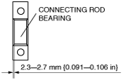
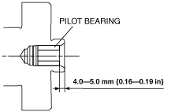

L8/LF/L3/L5 [Engine WM] ➭ ENGINE ➭ MECHANICAL ➭ CYLINDER BLOCK ASSEMBLY (I)
id011000504000
Caution• When replacing the piston, piston pin, and connecting rod (semi-floating type piston pin), replace them together as a single unit.
• When disassembling the piston, piston pin, and connecting rod of the full floating type piston pin, replace the piston, piston pin, and snap ring as a single unit.
L5
• If the crankshaft and the cylinder block are replaced with a type B from a type A as shown in the figure, replace the crankshaft and cylinder block with a type B at the same time. Otherwise, the engine could be damaged.
Crankshaft
|
belbze00000208 |
Cylinder block
|
am6zzw00004835 |
Note• The internal parts of the cylinder block will not be available for the “TRIBUTE (L.H.D.) Face-lifted model”
(Refer to TRIBUTE Workshop Manual for identifying Face-lifted model.)
1. Assemble in the order indicated in the table.
|
belbze00000187 |
|
1 |
Oil jet valve |
|---|---|
|
2 |
Upper main bearing, thrust bearing |
|
3 |
Crankshaft |
|
4 |
Lower main bearing |
|
5 |
Main bearing cap (See Main Bearing Cap Assembly Note) |
|
6 |
Connecting rod (Full floating type piston pin) |
|
7 |
Snap ring (Full floating type piston pin) |
|
8 |
Piston pin (Full floating type piston pin) (See Piston Pin Assembly Note.) |
|
9 |
Piston (Full floating type piston pin) |
|
10 |
Piston ring (See Piston Ring Assembly Note) |
|
11 |
Upper connecting rod bearing (See Connecting Rod Bearing Assembly Note) |
|
12 |
Connecting rod, piston component (See Piston Assembly Note) |
|
13 |
Lower connecting rod bearing (See Connecting Rod Bearing Assembly Note) |
|
14 |
Connecting rod cap (See Connecting Rod Cap Assembly Note) |
|
15 |
Balancer unit (L3, L5) (See Balancer Unit Assembly Note) |
|
16 |
Adjustment shim (L3, L5) (See Balancer Unit Assembly Note) |
|
17 |
Pilot bearing (If equipped) (See Pilot Bearing Assembly Note.) |
Main Bearing Cap Assembly Note
1. Install the main bearing caps in the order indicated in the figure, using the SST (49 D032 316).
|
belbze00000056 |
Tightening torque
Plastic region tightening bolt (Bolt stem length 110 mm)
1. 43—47 N·m {4.4—4.7 kgf·m, 31.8—34.6 ft·lbf}
2. 175°—185°
Elastic region tightening bolt (Bolt stem length 104 mm)
1. Apply engine oil to all bolts.
2. 3—7 N·m {30.6—71.3 kgf·cm, 26.6—61.9 in·lbf}
3. 23—27 N·m {2.4—2.7 kgf·m, 17—19.9 ft·lbt}
4. 38—42 N·m {3.9—4.2 kgf·m, 28.1—30.9 ft·lbt}
5. Loosen all the bolts. (no remaining torque.)
6. 3—7 N·m {30.6—71.3 kgf·cm, 26.6—61.9 in·lbt}
7. 18—22 N·m {1.9—2.2 kgf·m, 13.3—16.2 ft·lbt}
8. 87.5°—92.5°
1. Assemble the piston pin so that the front marks of the piston and the connecting rod are positioned on the same surface.
Type A
|
|
 belbze00000212
belbze00000212Type B
|
belbze00000218 |
1. Install the two oil control ring segments and spacer.
2. Verify that the second ring is installed with scraper face side downward.
3. Verify that the top ring is installed with scraper face side inner of upper.
|
belbze00000057 |
Connecting Rod Bearing Assembly Note
1. Install the connecting rod bearing to the connecting rod and connecting rod caps, as shown in the figure.
If engine has connecting rod bearing with positioning tab
|
belbze00000175 |
If engine has no connecting rod bearing with positioning tab
Caution• If there is no connecting rod bearing with positioning tabs at the large end of the connecting rod, install the connecting rod bearing so that the bearing is at the center of the connecting rod cap.
|
 belbze00000060 |
Note• It is not necessary to position the end gaps of the top ring and second ring.
• It is not necessary to position the two-piece oil ring end gaps.
1. Assemble the three-piece oil ring so that the three-piece oil ring end gaps do not overlap as shown in the figure.
|
belbze00000058 |
2. Insert the piston and connecting rod into the cylinder with the arrow mark to front of the engine.
|
belbze00000059 |
Connecting Rod Cap Assembly Note
Caution• When assembling the connecting rod caps full floating type piston pin, align the broken, rough faces of the connecting rods and connecting rod caps.
1. Tighten the connecting rod bolts in two steps using the SST (49 D032 316).
Tightening torque
1. 26—32 N·m {2.7—3.2 kgf·m, 19.2—23.6 ft·lbf}
2. 80°—100°
Caution• The balancer unit cannot be disassembled due to the precision interior construction of the balancer unit.
1. Visually inspect the balancer unit gear for damage and verify that the shaft rotates smoothly.
• If there is any malfunction, replace the balancer unit.
2. Remove the cylinder block lower blind plug and install the SST.
|
|
 belbze00000061
belbze000000613. Rotate the crankshaft in the direction of engine rotation so that the No. 1 cylinder is at top dead center (TDC). (Until the counterweight contacts the SST and stops.)
Note• If the cylinder block, crankshaft, crankshaft main bearing, and balancer unit are not replaced, use the adjustment shim as it is. In this case, go to Step 12.
4. Assemble the master shims (No. 50) to the shim seating face of the balancer unit at the angles shown in the figure.
|
belbze00000062 |
Caution• Engage the gears slowly and place the balancer unit on the cylinder block while being careful not to contact the balancer unit gear strongly with the crankshaft drive gear and damage it.
5. With the balancer unit marks at the exact top center positions, assemble the balancer unit to the cylinder block and tighten the bolts in a criss-cross pattern in two steps.
|
belbze00000063 |
Tightening torque
1. 25 N·m {2.6 kgf·m, 18.4 ft·lbt}
2. 39—45 N·m {4.0—4.5 kgf·m, 28.8—33.1ft·lbf}
6. Remove the SST installed in Step 2.
7. Measure the gear backlash using the following procedure.
(1) Place the ATDC marks 10 °, 30 °, 100 °, 190 °, 210 °, 280 ° on the rear side of the crankshaft to indicate the angles.
(2) Insert a flathead screwdriver into the crankshaft No.1 counterweight area and set both the rotation and the thrust direction with the flathead screwdriver, using a prying action, as shown in the figure for accurate measurement of the backlash.+-----------------------------------------------------------+ | belbze00000064 | +-----------------------------------------------------------+
(3) Set the SST and a dial gauge as shown in the figure.+-----------------------------------------------------------+ | belbze00000065 | +-----------------------------------------------------------+
(4) Rotate the driven gear to the left and right so that the crankshaft drive gear and balancer unit gear contact each other lightly.
(5) When measuring the backlash, rotate the crankshaft one full rotation and measure the backlash at 6 locations (A to F) as shown in the figure.+-----------------------------------------------------------+ | belbze00000188 | +-----------------------------------------------------------+
8. Select the adjustment shim from the selection table based on the measured minimum value of the backlash.
Adjustment shim selection table
|
Measured backlash mm {in} |
Selection shim (No.) |
Shim thickness mm {in} |
Measured backlash mm {in} |
Selection shim (No.) |
Shim thickness mm {in} |
|---|---|---|---|---|---|
|
0.267—0.273 {0.01051—0.01074} |
15 |
1.15 {0.0452} |
0.127—0.133 {0.00500—0.00523} |
35 |
1.35 {0.0531} |
|
0.260—0.266 {0.01023—0.01047} |
16 |
1.16 {0.0456} |
0.120—0.126 {0.00472—0.00496} |
36 |
1.36 {0.0535} |
|
0.253—0.259 {0.00996—0.01019} |
17 |
1.17 {0.0460} |
0.113—0.119 {0.00444—0.00468} |
37 |
1.37 {0.0539} |
|
0.246—0.252 {0.00968—0.00992} |
18 |
1.18 {0.0464} |
0.106—0.112 {0.00417—0.00440} |
38 |
1.38{0.0543} |
|
0.239—0.245 {0.00940—0.00964} |
19 |
1.19 {0.0468} |
0.099—0.105 {0.00389—0.00413} |
39 |
1.39 {0.0547} |
|
0.232—0.238 {0.00913—0.00937} |
20 |
1.20 {0.0472} |
0.092—0.098 {0.00362—0.00385} |
40 |
1.40 {0.0551} |
|
0.225—0.231 {0.00885—0.00909} |
21 |
1.21 {0.0476} |
0.085—0.091 {0.00334—0.00358} |
41 |
1.41 {0.0555} |
|
0.218—0.224 {0.00858—0.00881} |
22 |
1.22 {0.0480} |
0.078—0.084 {0.00307—0.00330} |
42 |
1.42 {0.0559} |
|
0.211—0.217 {0.00830—0.00854} |
23 |
1.23 {0.0484} |
0.071—0.077 {0.00279—0.00303} |
43 |
1.43 {0.0562} |
|
0.204—0.210 {0.00803—0.00826} |
24 |
1.24 {0.0488} |
0.064—0.070 {0.00251—0.00275} |
44 |
1.44 {0.0566} |
|
0.197—0.203 {0.00775—0.00799} |
25 |
1.25 {0.492} |
0.057—0.063 {0.00224—0.00248} |
45 |
1.45 {0.0570} |
|
0.190—0.196 {0.00748—0.00771} |
26 |
1.26 {0.496} |
0.050—0.056 {0.00196—0.00220} |
46 |
1.46 {0.0574} |
|
0.183—0.189 {0.00720—0.00744} |
27 |
1.27 {0.499} |
0.043—0.049 {0.00169—0.00192} |
47 |
1.47 {0.0578} |
|
0.176—0.182 {0.00692—0.00716} |
28 |
1.28 {0.503} |
0.036—0.042 {0.00141—0.00165} |
48 |
1.48 {0.0582} |
|
0.169—0.175 {0.00665—0.00688} |
29 |
1.29 {0.507} |
0.029—0.035 {0.00114—0.00137} |
49 |
1.49 {0.0586} |
|
0.162—0.168 {0.00637—0.00661} |
30 |
1.30 {0.511} |
0.022—0.028 {0.000866—0.00110} |
50 (master shim) |
1.50 {0.0590} |
|
0.155—0.161 {0.00610—0.00633} |
31 |
1.31 {0.515} |
0.015—0.021 {0.00059—0.000826} |
51 |
1.51 {0.0594} |
|
0.148—0.154 {0.00582—0.00606} |
32 |
1.32 {0.519} |
0.008—0.014 {0.000314—0.000551} |
52 |
1.52 {0.0598} |
|
0.141—0.147 {0.00555—0.00578} |
33 |
1.33 {0.523} |
0.001—0.007 {0.00003—0.000275} |
53 |
1.53 {0.0602} |
|
0.134—0.140 {0.00527—0.00551} |
34 |
1.34 {0.527} |
0.000—0.000 {0.000—0.000} |
54 |
1.54 {0.0606} |
9. Verify that the No. 1 cylinder is at TDC.
• If not aligned, perform Steps 2—3.
10. Remove the master shim from the balancer unit and assemble the selected adjustment shim at the angles shown in the figure.
|
belbze00000062 |
11. Perform Steps 5—7.
12. Verify that the measured backlash is within the specified range.
• If the backlash exceeds the maximum specification, replace the adjustment shim and repeat Steps 4—12.
Measured backlash maximum
0.01—0.1 mm {0.0004—0.0039 In}
1. Assemble the pilot bearing using the corresponding 20 mm {0.79 in} side of a Snap-on brand millimeter size bushing driver set A160M adapter A160M7 (20—22 mm {0.79—0.86 in}).
Substitution
A160M7 (20 mm {0.79 in})
Outer diameter: 21 mm {0.83 in}
Inner diameter: 19 mm {0.75 in}
|
|
 belbze00000067
belbze00000067|
 belbze00000068 |